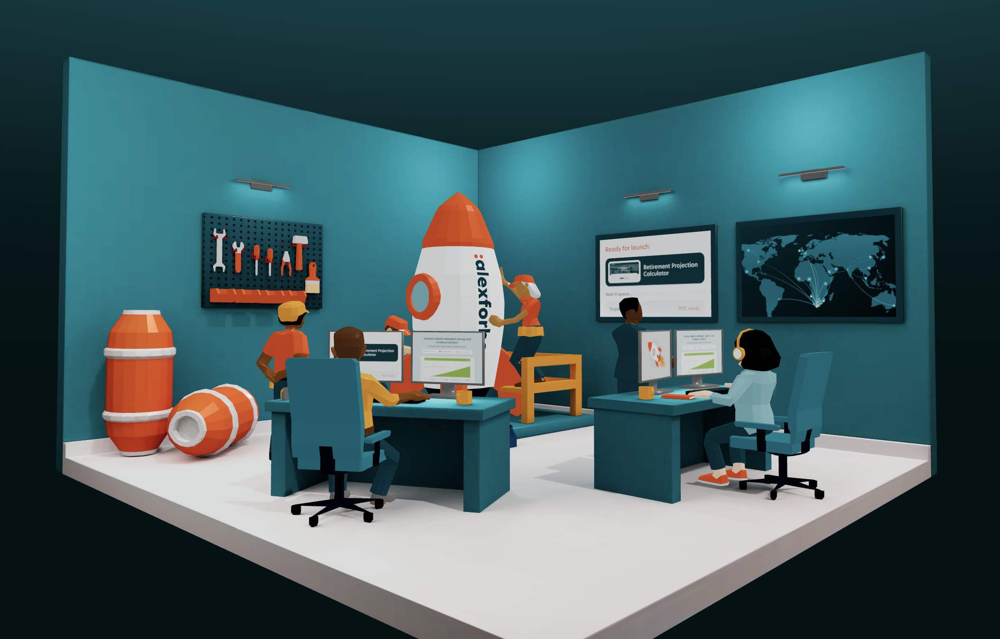
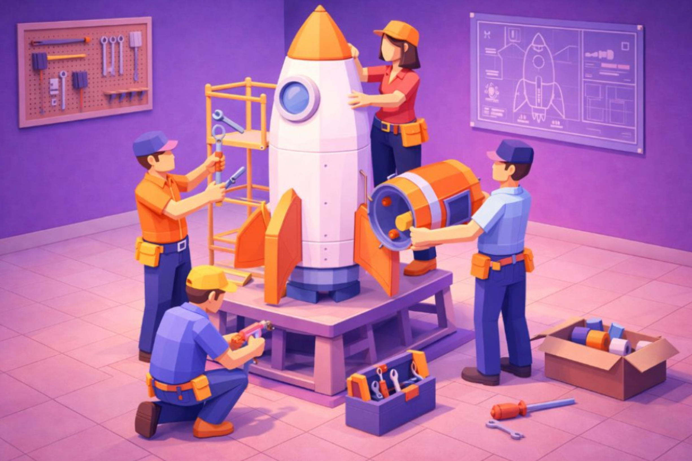
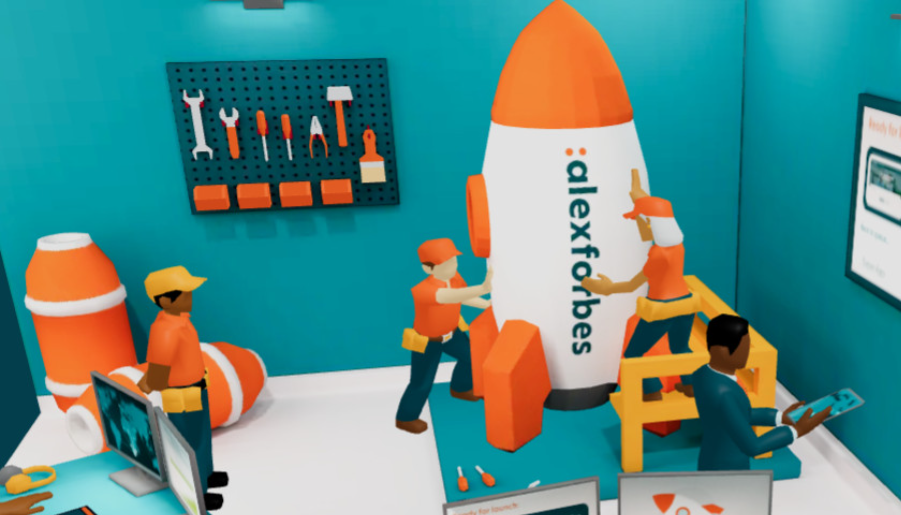
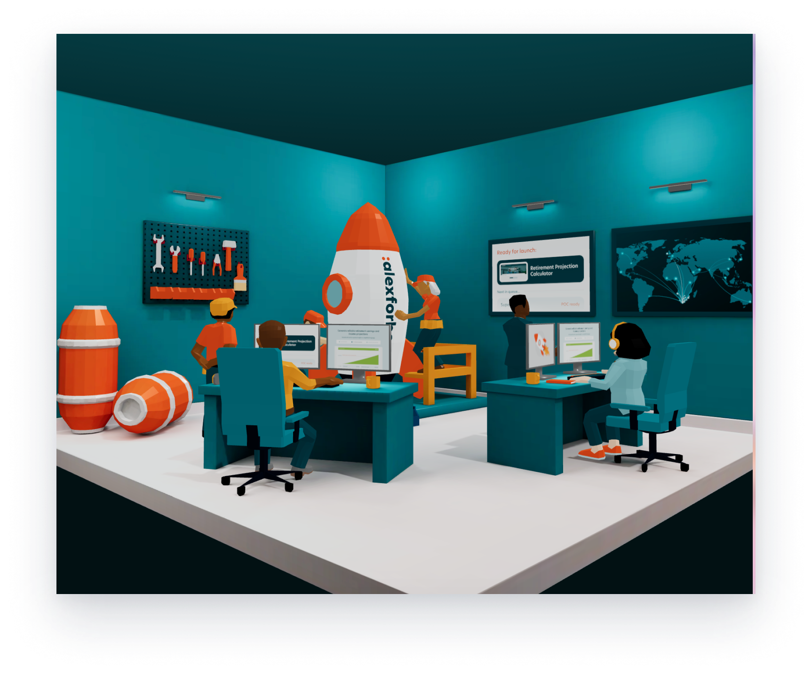
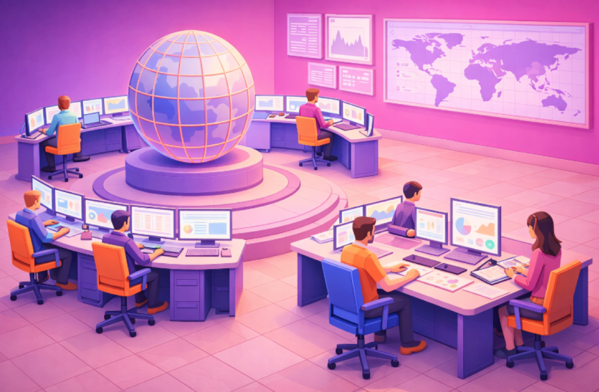
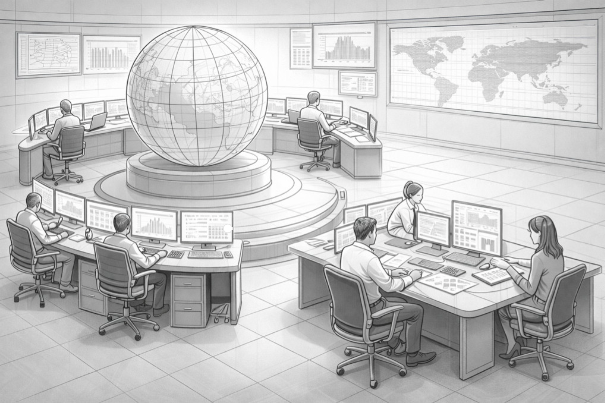

AF Landscape
AF Landscape is a proof of concept for creating interactive 3D environments that allow people to explore spaces, cities, structures and projects spatially rather than through conventional diagrams.
AF Landscape is a proof of concept for creating interactive 3D environments that allow people to explore spaces, cities, structures and projects spatially rather than through conventional diagrams.




Organisational information is often presented through static diagrams, documents and presentations. AF Landscape explores a more engaging way to communicate how teams, roles, processes and projects connect.
The project combines a visually designed 3D environment with editable information, animation and interaction.
Complex organisational information can be difficult to understand when presented without context. An interactive world creates an opportunity for users to explore information spatially, focus on individual elements and move between different levels of detail.
The proposed audience includes employees, project teams and business stakeholders who need to understand a team’s responsibilities and delivery process.
A low-poly visual language gave the environment a distinctive character while keeping assets lightweight for the web. Environments, characters, lighting, textures and animations were authored in Blender.
A low-poly environment representing a software delivery team, including characters, desks, a central rocket and supporting assets.
AF Landscape provides a promising foundation for presenting team information in a more engaging way. Focusing on one software delivery team helped give the experience a clear story and manageable scope.
The next priority should be testing with internal teams to understand how easily they can explore the environment and find relevant information.
| Tool / technology | Role |
|---|---|
| Blender | Environments, assets, materials, lighting, rigging and animation |
| Python | Asset preparation and optimisation |
| React | Interface and editing controls |
| React Three Fiber | Integration of interactive 3D scenes within React |
| Three.js | 3D rendering and scene interaction |
| Vite | Web application development and build tooling |
| Miro | Concept planning and collaboration |
Building assets, materials and animations.
Optimising and organising content for the web.
Bringing the prepared scenes into the interactive application.
Configuring information, camera views and animation actions.

Miro project boardProject planning and collaboration.↗ View
Technical workflow diagramHow content moves from source system to experience.↗ ViewConcept illustrationEarly narrative and spatial artwork for the project.↗ ViewCharacter and environment assets3D character and environment production files.↗ ViewEnvironment and editor screenshotsReference views and content-editor layouts.↗ View